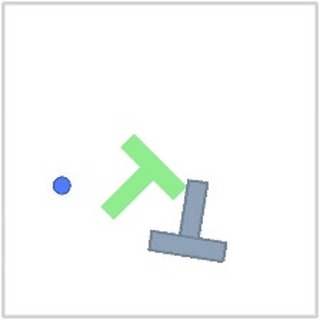
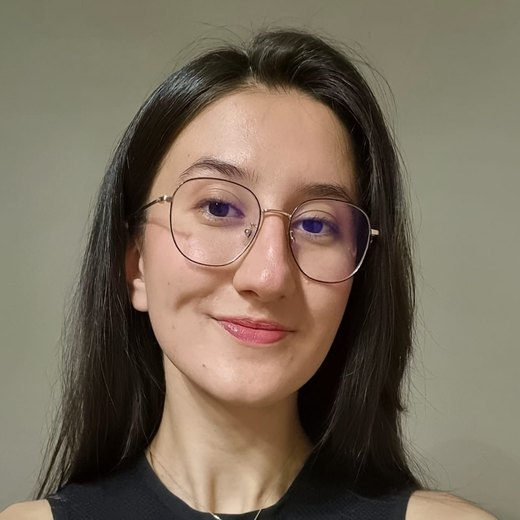
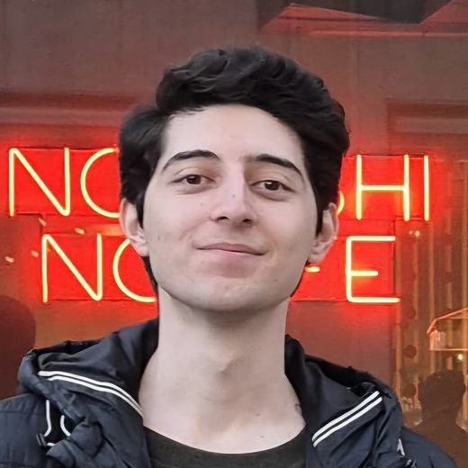
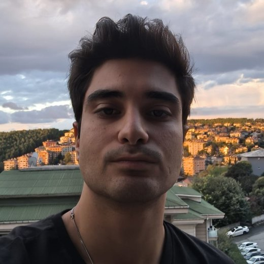
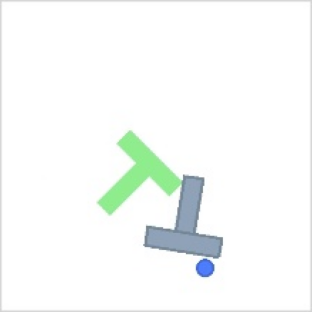
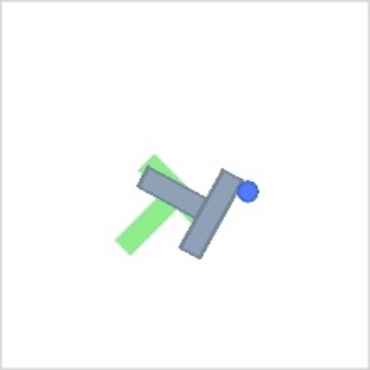
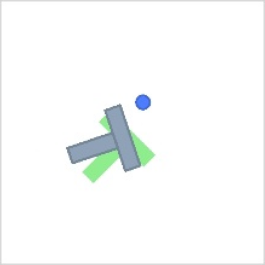
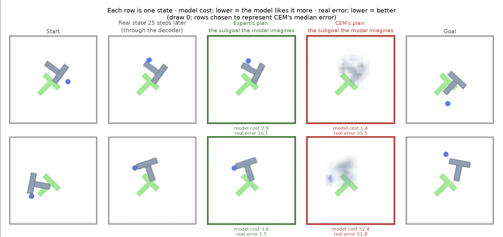
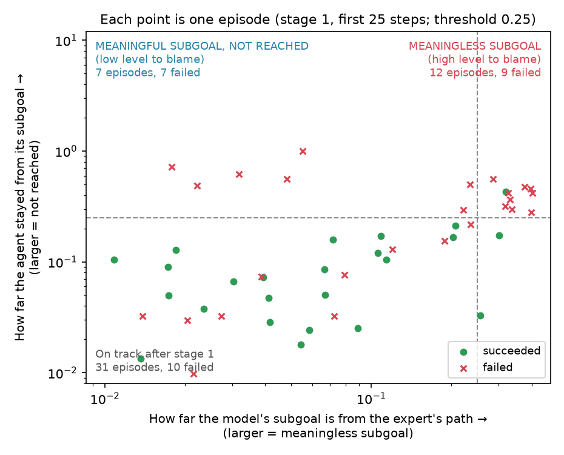

inzva · Final presentation
Predicting the future in an abstract space.
Defne Erkan · Oğuz Nurlu · Arda Alpay
October 2026

Our team



Introduction · The problem
A two-dimensional task that looks simple. Both the position and the orientation have to be right.
So why is it hard? A bad push is hard to undo. Once the T ends up in a bad spot, it takes a long time to fix.
So the robot has to think before it acts. Thinking ahead like this is called planning.
Related work
Five papers, and the role each one plays in this project.
Dataset
episode
Each one is a complete solution: the expert taking the T all the way to the goal.
frame
Each is a 224×224 RGB image plus a 2D action: the direction of the push.
median steps
Episodes range from 49 to 246 steps long.
The key point: there is no reward. The data holds only images and actions. The model is never told whether something was good or bad; it only sees what the expert did.
Pipeline
A raw image is big: 224×224 pixels, three colour channels. The part that turns an image into a summary is the encoder. The space these summaries live in is the latent space. Imagining and planning happen there, not in pixels.
Pipeline
The robot doesn't have to make a push for real. It tries it in its head, sees the result, and drops it if it's bad. That's cheap and risk-free.
Pipeline · CEM = Cross-Entropy Method
Generate lots of random plans. Here, a plan is the sequence of pushes we'll give the T.
Try each plan in the world model and score it by how close it gets to the goal.
Keep the plans with the best scores.
Generate new plans around the best ones, then go back to step 2.
Pipeline · Hierarchy
The high level splits a distant goal into pieces; a subgoal is a stop along the way. It doesn't think push by push, but in 25-step chunks. We call such a chunk a macro-action.



A successful example: the subgoals look sensible and the agent reaches the goal. This is hierarchy working as intended. But is it always like this?
Stage 1 · Method
A two-level model built on a GRU. A GRU is a kind of neural network for sequences; it keeps the past in memory.
The fine model predicts one environment step ahead, the coarse model two. Over a 10-step horizon, that makes 5 waypoints. CEM plans 5 steps at a time instead of 10, so less error builds up, and with fewer world-model calls planning runs faster.
Stage 1 · Result
19M trained predictor + 21M frozen DINOv2 encoder (our sum).
Not a win, not a tie: our goal was strong performance from a much smaller model.
Stage 2 · The question
A hint: in the model's eyes, yes.
But what the model sees and what really happens may not be the same thing. So we asked two questions:
Does the model's score for the planner's subgoal match reality?
When an episode fails, which level is to blame: the high level or the low level?
Results
CEM's plan, compared with the expert's
Range across draws: 2.6× – 24.7×
CEM's subgoal, compared with the expert's
Distance to the real state 25 steps later
The model and reality point in opposite directions. By the model's score, CEM beats the expert in 81% of cases — but that doesn't mean it found a better plan. It means it found where the model is wrong.
Results

A crisp T in the right place. Its model cost is high.
A grey smudge; the T has lost its shape. Yet the model likes the smudge better.
This is what the 9.5× and 18.4× from the previous slide look like.
Results
Same low level, same 50 episodes. The only difference is where the subgoals come from: the model in one run, the expert in the other.
p = 0.035 (McNemar). Of the episodes where the outcomes differ, 17 favour the expert and 6 favour the model.
How much of the way to the goal failed episodes covered (median): 0.12 with the model's subgoals, 0.76 with the expert's.
Results

The subgoal is far from the expert's path. The high level is to blame. In the first 25 steps, 12 episodes fall in this group.
The subgoal is sensible and close to the expert's, but the agent still can't reach it. The low level is to blame. 7 episodes fall in this group.
This split depends on the threshold. We chose 0.25; at 0.10 there would be 14 meaningless subgoals, at 0.50 none. Read 12 and 7 as a picture, not as exact counts.
Conclusions
The model's score and reality point in opposite directions: inside the model, CEM's plan looks 9.5× better; in reality, its subgoal is 18.4× worse.
Of the 12 episodes with a meaningless subgoal, 9 fail; the expert's subgoals rescue 7 of them. Of the 7 episodes with a sensible but unreachable subgoal, all 7 fail; the expert's subgoals rescue only 3.
Takeaway: fixing the high level alone isn't enough. The low level's ability to reach a subgoal needs work of its own.
Future work
Our results rest on a single seed and 50 episodes. We worked with d = 50; we want to see what happens with more distant goals, such as d = 75.
Hi-LeWM-C keeps CEM's search within the part of the training data where it fits best. We haven't tried it in the environment.
The episodes in the top-left corner show that this needs its own measurement.
Add parameters and train a high-level model for a longer horizon. The horizon is how far ahead the model looks. We still want to keep the model small.
Closing
Questions? Go ahead.
Repo: github.com/Thnorty/inzva-hierarchical-planning
Slides: thnorty.github.io/inzva-hierarchical-planning
